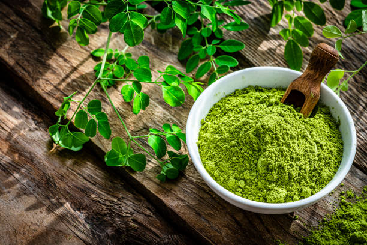

Organic Moringa Leaf Powder
Gently dried to preserve nutrients and vibrant green colour. Our flagship export variant — NOPO certified, USDA Organic and EU Organic certified. Ideal for premium superfood, nutraceutical, and supplement applications globally.
Colour: Bright Green
Shelf Life: 12 Months
MOQ: 100 kg
Certifications: NOPO Certified · USDA Organic · EU Organic · FSSAI · Lab Tested (COA)
- NOPO certified — grown and processed without synthetic pesticides
- High in antioxidants, vitamins A, C, E and minerals
- Used in smoothies, supplements, capsules, and functional food formulations
- High nutritional preservation due to gentle low-temperature processing
- COA, heavy metal, pesticide residue reports available on request